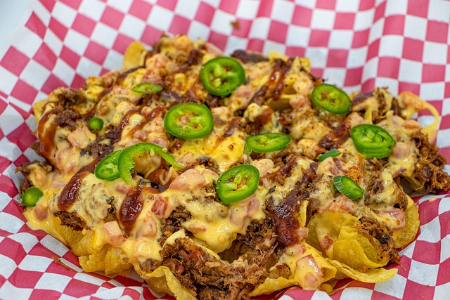

Nachos Barbacoa Mexicano

Description
Nachos Barbacoa Mexicano is a flavorful Mexican classic that combines crispy tortilla chips with tender,
slow-cooked barbacoa beef, melted cheese, and fresh toppings. The barbacoa, typically made from beef
brisket or chuck roast, is simmered with chilies, garlic, and spices until it’s fall-apart tender, then layered
generously over warm nachos.
This dish is perfect for gatherings, game nights, or as a satisfying snack. The mix of textures—from the
crunch of the chips to the juiciness of the meat—and the combination of savory, spicy, and fresh flavors
make it an irresistible crowd-pleaser.
Ingredients
- 1 lb (450 g) beef brisket or chuck roast
- 2 dried guajillo chilies (seeded)
- 1 chipotle pepper in adobo sauce
- 3 garlic cloves
- 1 onion, quartered
- 1 cup beef broth
- 1 tsp cumin powder
- 1 tsp oregano
- Salt and pepper to taste
- 8 oz (225 g) tortilla chips
- 1 cup shredded cheddar or Monterey Jack cheese
- ½ cup sour cream
- ½ cup guacamole
- ½ cup pico de gallo
- Fresh cilantro for garnish
Steps
- Soak dried guajillo chilies in hot water for 10 minutes until softened.
- Blend chilies, chipotle pepper, garlic, onion, beef broth, cumin, oregano, salt, and pepper until smooth.
- Place beef in a slow cooker or pot and pour the sauce over it. Cook on low for 6–8 hours, or until the meat is tender and easy to shred.
- Shred the beef using two forks and mix it with some of the cooking sauce.
- Preheat oven to 375°F (190°C). Spread tortilla chips on a baking sheet and top with shredded beef and cheese.
- Bake for 5–7 minutes until cheese is melted.
- Top with sour cream, guacamole, pico de gallo, and fresh cilantro. Serve warm.
Home